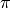
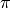

Using the SkyCoord High-level Class¶
The SkyCoord class provides a simple and flexible user interface for
celestial coordinate representation, manipulation, and transformation between
coordinate frames. This is a high-level class that serves as a wrapper
around the low-level coordinate frame classes like ICRS
and FK5 which do most of the heavy lifting.
The key distinctions between SkyCoord and the low-level classes
(Using and Designing Coordinate Frames) are as follows:
- The
SkyCoordobject can maintain the union of frame attributes for all built-in and user-defined coordinate frames in theastropy.coordinates.frame_transform_graph. Individual frame classes hold only the required attributes (e.g. equinox, observation time or observer location) for that frame. This means that a transformation fromFK4(with equinox and observation time) toICRS(with neither) and back toFK4via the low-level classes would not remember the original equinox and observation time. Since theSkyCoordobject stores all attributes, such a round-trip transformation will return to the same coordinate object. - The
SkyCoordclass is more flexible with inputs to accommodate a wide variety of user preferences and available data formats. - The
SkyCoordclass has a number of convenience methods that are useful in typical analysis. - At present,
SkyCoordobjects can use only coordinate frames that have transformations defined in theastropy.coordinates.frame_transform_graphtransform graph object.
Creating SkyCoord objects¶
The SkyCoord class accepts a wide variety of inputs for initialization.
At a minimum these must provide one or more celestial coordinate values
with unambiguous units. Typically one also specifies the coordinate
frame, though this is not required.
Common patterns are shown below. In this description the values in upper
case like COORD or FRAME represent inputs which are described in detail
in the Initialization Syntax section. Elements in square brackets like
[unit=UNIT] are optional.
SkyCoord(COORD, [FRAME], keyword_args ...)
SkyCoord(LON, LAT, [frame=FRAME], [unit=UNIT], keyword_args ...)
SkyCoord([FRAME], <lon_attr>=LON, <lat_attr>=LAT, keyword_args ...)
The examples below illustrate common ways of initializing a SkyCoord object.
These all reflect initializing using spherical coordinates, which is the
default for all built-in frames. In order to understand working with coordinates
using a different representation such as cartesian or cylindrical, see the
section on Representations. First some imports:
>>> from astropy.coordinates import SkyCoord # High-level coordinates
>>> from astropy.coordinates import ICRS, Galactic, FK4, FK5 # Low-level frames
>>> from astropy.coordinates import Angle, Latitude, Longitude # Angles
>>> import astropy.units as u
>>> import numpy as np
The coordinate values and frame specification can now be provided using positional and keyword arguments. First we show positional arguments for RA and Dec:
>>> SkyCoord(10, 20, unit='deg') # Defaults to ICRS
<SkyCoord (ICRS): (ra, dec) in deg
(10.0, 20.0)>
>>> SkyCoord([1, 2, 3], [-30, 45, 8], frame='icrs', unit='deg')
<SkyCoord (ICRS): (ra, dec) in deg
[(1.0, -30.0), (2.0, 45.0), (3.0, 8.0)]>
Notice that the first example above does not explicitly give a frame. In this case, the default is taken to be the ICRS system (approximately correct for “J2000” equatorial coordinates). It is always better to explicitly specify the frame when it is known to be ICRS, however, as anyone reading the code will be better able to understand the intent.
String inputs in common formats are acceptable, and the frame can be supplied
as either a class type like FK4, an instance of a
frame class, a SkyCoord instance (from which the frame
will be extracted), or the lower-case version of a frame name as a string,
e.g. "fk4":
>>> coords = ["1:12:43.2 +1:12:43", "1 12 43.2 +1 12 43"]
>>> sc = SkyCoord(coords, frame=FK4, unit=(u.hourangle, u.deg), obstime="J1992.21")
>>> sc = SkyCoord(coords, frame=FK4(obstime="J1992.21"), unit=(u.hourangle, u.deg))
>>> sc = SkyCoord(coords, frame='fk4', unit='hourangle,deg', obstime="J1992.21")
>>> sc = SkyCoord("1h12m43.2s", "+1d12m43s", frame=Galactic) # Units from strings
>>> sc = SkyCoord("1h12m43.2s +1d12m43s", frame=Galactic) # Units from string
>>> sc = SkyCoord(l="1h12m43.2s", b="+1d12m43s", frame='galactic')
>>> sc = SkyCoord("1h12.72m +1d12.71m", frame='galactic')
Note that frame instances with data and SkyCoord instances
can only be passed as frames using the frame= keyword argument and not as
positional arguments.
For representations that have ra and dec attributes one can supply a coordinate
string in a number of other common formats. Examples include:
>>> sc = SkyCoord("15h17+89d15")
>>> sc = SkyCoord("275d11m15.6954s+17d59m59.876s")
>>> sc = SkyCoord("8 00 -5 00.6", unit=(u.hour, u.deg))
>>> sc = SkyCoord("J080000.00-050036.00", unit=(u.hour, u.deg))
>>> sc = SkyCoord("J1874221.31+122328.03", unit=u.deg)
Astropy Quantity-type objects are acceptable and encouraged
as a form of input:
>>> ra = Longitude([1, 2, 3], unit=u.deg) # Could also use Angle
>>> dec = np.array([4.5, 5.2, 6.3]) * u.deg # Astropy Quantity
>>> sc = SkyCoord(ra, dec, frame='icrs')
>>> sc = SkyCoord(ra=ra, dec=dec, frame=ICRS, obstime='2001-01-02T12:34:56')
Finally it is possible to initialize from a low-level coordinate frame object.
>>> c = FK4(1 * u.deg, 2 * u.deg)
>>> sc = SkyCoord(c, obstime='J2010.11', equinox='B1965') # Override defaults
A key subtlety highlighted here is that when low-level objects are created they have
certain default attribute values. For instance the FK4
frame uses equinox='B1950.0 and obstime=equinox as defaults. If
this object is used to initialize a SkyCoord it is possible to override
the low-level object attributes that were not explicitly set. If the
coordinate above were created with
c = FK4(1 * u.deg, 2 * u.deg, equinox='B1960') then creating a SkyCoord
with a different equinox would raise an exception.
Initialization Syntax¶
For spherical representations, which are the most common and are the default
input format for all built-in frames, the syntax for SkyCoord is given
below:
SkyCoord(COORD, [FRAME | frame=FRAME], [unit=UNIT], keyword_args ...)
SkyCoord(LON, LAT, [DISTANCE], [FRAME | frame=FRAME], [unit=UNIT], keyword_args ...)
SkyCoord([FRAME | frame=FRAME], <lon_name>=LON, <lat_name>=LAT, [unit=UNIT],
keyword_args ...)
In the above description, elements in all capital letters (e.g. FRAME)
describes a user input of that element type. Elements in square brackets are
optional. For non-spherical inputs see the Representations section.
LON, LAT
Longitude and latitude value can be specified as separate positional arguments. The following options are available for longitude and latitude:
- Single angle value:
- List or
Quantityarray or numpy array of angle values Angle,Longitude, orLatitudeobject, which can be scalar or array-valued
DISTANCE
The distance to the object from the frame center can be optionally specified:
COORD
This input form uses a single object to supply coordinate data. For the case of spherical coordinate frames, the coordinate can include one or more longitude and latitude pairs in one of the following ways:
- Single coordinate string with a LON and LAT value separated by a space. The
respective values can be any string which is formatted for
Creation of
LongitudeorLatitudeobjects, respectively. - List or numpy array of such coordinate strings
- List of (LON, LAT) tuples, where each LON and LAT are scalars (not arrays)
N x 2numpy orQuantityarray of values where the first column is longitude and the second column is latitude, e.g.[[270, -30], [355, +85]] * u.deg- List of (LON, LAT, DISTANCE) tuples
N x 3numpy orQuantityarray of values where columns are longitude, latitude, and distance respectively.
The input can also be more generalized objects that are not necessarily represented in the standard spherical coordinates:
- Coordinate frame object, e.g.
FK4(1*u.deg, 2*u.deg, obstime='J2012.2') SkyCoordobject (which just makes a copy of the object)BaseRepresentationsubclass object likeSphericalRepresentation,CylindricalRepresentation, orCartesianRepresentation.
FRAME
This can be a BaseCoordinateFrame frame class, an
instance of such a class, or the corresponding string alias. The frame
classes that are built in to astropy are ICRS,
FK5, FK4,
FK4NoETerms, Galactic, and
AltAz. The string aliases are simply lower-case
versions of the class name.
If the frame is not supplied then you will see a special ICRS
identifier. This indicates that the frame is unspecified and operations
that require comparing coordinates (even within that object) are not allowed.
unit=UNIT
The unit specifier can be one of the following:
Unitobject which is an angular unit that is equivalent toUnit('radian')- Single string with a valid angular unit name
- 2-tuple of
Unitobjects or string unit names specifying the LON and LAT unit respectively, e.g.('hourangle', 'degree') - Single string with two unit names separated by a comma, e.g.
'hourangle,degree'
If only a single unit is provided then it applies to both LON and LAT.
Other keyword arguments
In lieu of positional arguments to specify the longitude and latitude, the frame-specific names can be used as keyword arguments:
- ra, dec: LON, LAT values, optional
- RA and Dec for frames where these are representation, including [FIXME]
ICRS,FK5,FK4, andFK4NoETerms. - l, b: LON, LAT values, optional
- Galactic
landbfor theGalacticframe.
The following keywords can be specified for any frame:
- distance: valid
Distanceinitializer, optional - Distance from reference from center to source.
- obstime: valid
Timeinitializer, optional - Time of observation
- equinox: valid
Timeinitializer, optional - Coordinate frame equinox
If custom user-defined frames are included in the transform graph and they
have additional frame attributes, then those attributes can also be
set via corresponding keyword args in the SkyCoord initialization.
Array operations¶
It is possible to store arrays of coordinates in a SkyCoord object, and
manipulations done in this way will be orders of magnitude faster than
looping over a list of individual SkyCoord objects:
>>> ra = np.random.uniform(0, 360, size=1000) * u.deg
>>> dec = np.random.uniform(-90, 90, size=1000) * u.deg
>>> sc_list = [SkyCoord(r, d, frame='icrs') for r, d in zip(ra, dec)]
>>> timeit sc_gal_list = [c.galactic for c in sc_list]
1 loops, best of 3: 7.66 s per loop
>>> sc = SkyCoord(ra, dec, frame='icrs')
>>> timeit sc_gal = sc.galactic
100 loops, best of 3: 8.92 ms per loop
In addition to vectorized transformations, you can do the usual array slicing, dicing, and selection:
>>> north_mask = sc.dec > 0
>>> sc_north = sc[north_mask]
>>> len(sc_north)
504
>>> sc[2:4]
<SkyCoord (ICRS): (ra, dec) in deg
[(304.304015..., 6.900282...),
(322.560148..., 34.872244...)]>
>>> sc[2]
<SkyCoord (ICRS): ra=304.304015... deg, dec=6.900282... deg>
Attributes¶
The SkyCoord object has a number of useful attributes which come in handy.
By digging through these we’ll learn a little bit about SkyCoord and how it
works.
To begin (if you don’t know already) one of the most important tools for learning about attributes and methods of objects is “TAB-discovery”. From within IPython you can type an object name, the period, and then the <TAB> key to see what’s available. This can often be faster than reading the documentation:
>>> sc = SkyCoord(1, 2, frame='icrs', unit='deg', obstime='2013-01-02 14:25:36')
>>> sc.<TAB>
sc.cartesian sc.match_to_catalog_3d
sc.data sc.match_to_catalog_sky
sc.dec sc.name
sc.default_representation sc.obstime
sc.distance sc.position_angle
sc.equinox sc.ra
sc.fk4 sc.realize_frame
sc.fk4noeterms sc.represent_as
sc.fk5 sc.representation
sc.frame sc.representation_component_names
sc.frame_attr_names sc.representation_component_units
sc.frame_specific_representation_info sc.representation_info
sc.from_name sc.separation
sc.galactic sc.separation_3d
sc.get_frame_attr_names sc.shape
sc.has_data sc.spherical
sc.icrs sc.time_attr_names
sc.is_frame_attr_default sc.to_string
sc.is_transformable_to sc.transform_to
sc.isscalar
Here we see a bunch of stuff there but much of it should be recognizable or
easily guessed. The most obvious may be the longitude and latitude attributes
which are named ra and dec for the ICRS frame:
>>> sc.ra
<Longitude 1.0 deg>
>>> sc.dec
<Latitude 2.0 deg>
Next notice that all the built-in frame names icrs, galactic, fk5
fk4, and fk4noeterms are there. Through the magic of Python
properties, accessing these attributes calls the object
transform_to method appropriately and returns a
new SkyCoord object in the requested frame:
>>> sc_gal = sc.galactic
>>> sc_gal
<SkyCoord (Galactic): (l, b) in deg
(99.6378552814, -58.7096929334)>
Other attributes you should recognize are distance, equinox,
obstime, shape.
Digger deeper¶
[Casual users can skip this section]
After transforming to Galactic the longitude and latitude values are now
labeled l and b, following the normal convention for Galactic
coordinates. How does the object know what to call its values? The answer
lies in some less-obvious attributes:
>>> sc_gal.representation_component_names
OrderedDict([(u'l', u'lon'), (u'b', u'lat'), (u'distance', u'distance')])
>>> sc_gal.representation_component_units
OrderedDict([(u'l', Unit("deg")), (u'b', Unit("deg"))])
>>> sc_gal.representation
<class 'astropy.coordinates.representation.SphericalRepresentation'>
Together these tell the object that l and b are the longitude and
latitude, and that they should both be displayed in units of degrees as
a spherical-type coordinate (and not, e.g. a cartesian coordinate).
Furthermore the frame’s representation_component_names attribute defines
the coordinate keyword arguments that SkyCoord will accept.
Another important attribute is frame_attr_names, which defines the
additional attributes that are required to fully define the frame:
>>> sc_fk4 = SkyCoord(1, 2, frame='fk4', unit='deg')
>>> sc_fk4.get_frame_attr_names()
{u'equinox': <Time object: scale='tai' format='byear_str' value=B1950.000>,
u'obstime': None}
The key values correspond to the defaults if no explicit value is provide by
the user. This example shows that the FK4 frame has two
attributes equinox and obstime that are required to fully define the
frame.
Some trickery is happening here because many of these attributes are
actually owned by the underlying coordinate frame object which does much of
the real work. This is the middle layer in the three-tiered system of objects:
representation (spherical, cartesian, etc.), frame (aka low-level frame class),
and SkyCoord (aka high-level class):
>>> sc.frame
<ICRS Coordinate: (ra, dec) in deg
(1.0, 2.0)>
>>> sc.has_data is sc.frame.has_data
True
>>> sc.frame.<TAB>
sc.frame.cartesian sc.frame.ra
sc.frame.data sc.frame.realize_frame
sc.frame.dec sc.frame.represent_as
sc.frame.default_representation sc.frame.representation
sc.frame.distance sc.frame.representation_component_names
sc.frame.frame_attr_names sc.frame.representation_component_units
sc.frame.frame_specific_representation_info sc.frame.representation_info
sc.frame.get_frame_attr_names sc.frame.separation
sc.frame.has_data sc.frame.separation_3d
sc.frame.is_frame_attr_default sc.frame.shape
sc.frame.is_transformable_to sc.frame.spherical
sc.frame.isscalar sc.frame.time_attr_names
sc.frame.name sc.frame.transform_to
>>> sc.frame.name
'icrs'
The SkyCoord object exposes the frame object attributes as its own. Though
it might seem a tad confusing at first, this a good thing because it makes
SkyCoord objects and BaseCoordinateFrame objects
behave very similarly and most routines can accept either one as input without
much bother (duck typing!).
The lowest layer in the stack is the abstract
UnitSphericalRepresentation object:
>>> sc_gal.frame.data
<UnitSphericalRepresentation (lon, lat) in rad
(1.73900863429, -1.02467744452)>
Transformations¶
The topic of transformations is covered in detail in the section on Transforming Between Systems.
For completeness here we will give some simple examples. Once you’ve defined
your coordinates and the reference frame, you can transform from that frame to
another frame. You can do this a few different ways: if you just want the
default version of that frame, you can use attribute-style access (as mentioned
previously). For more control, you can use the
transform_to method, which accepts a frame
name, frame class, frame instance, or SkyCoord:
>>> from astropy.coordinates import FK5
>>> sc = SkyCoord(1, 2, frame='icrs', unit='deg')
>>> sc.galactic
<SkyCoord (Galactic): (l, b) in deg
(99.6378552814, -58.7096929334)>
>>> sc.transform_to('fk5') # Same as sc.fk5 and sc.transform_to(FK5)
<SkyCoord (FK5: equinox=J2000.000): (ra, dec) in deg
(1.00000655566, 2.00000243092)>
>>> sc.transform_to(FK5(equinox='J1975')) # Transform to FK5 with a different equinox
<SkyCoord (FK5: equinox=J1975.000): (ra, dec) in deg
(0.679672818323, 1.86083014099)>
Transforming to a SkyCoord instance is an easy way of ensuring that two
coordinates are in the exact same reference frame:
>>> sc2 = SkyCoord(3, 4, frame='fk4', unit='deg', obstime='J1978.123', equinox='B1960.0')
>>> sc.transform_to(sc2)
<SkyCoord (FK4: equinox=B1960.000, obstime=J1978.123): (ra, dec) in deg
(0.48726331438, 1.77731617297)>
Representations¶
So far we have been using a spherical coordinate representation in the all the examples, and this is the default for the built-in frames. Frequently it is convenient to initialize or work with a coordinate using a different representation such as cartesian or cylindrical. In this section we discuss how to initialize an object using a different representation and how to change the representation of an object. For more information about representation objects themselves see Using and Designing Coordinate Representations.
Initialization¶
Most of what you need to know can be inferred from the examples below and
by extrapolating the previous documentation for spherical representations.
Initialization just requires setting the representation keyword and
supplying the corresponding components for that representation:
>>> c = SkyCoord(x=1, y=2, z=3, unit='kpc', representation='cartesian')
>>> c
<SkyCoord (ICRS): (x, y, z) in kpc
(1.0, 2.0, 3.0)>
>>> c.x, c.y, c.z
(<Quantity 1.0 kpc>, <Quantity 2.0 kpc>, <Quantity 3.0 kpc>)
Other variations include:
>>> SkyCoord(1, 2*u.deg, 3, representation='cylindrical')
<SkyCoord (ICRS): (rho, phi, z) in (, deg, )
(1.0, 2.0, 3.0)>
>>> SkyCoord(rho=1*u.km, phi=2*u.deg, z=3*u.m, representation='cylindrical')
<SkyCoord (ICRS): (rho, phi, z) in (km, deg, m)
(1.0, 2.0, 3.0)>
>>> SkyCoord(rho=1, phi=2, z=3, unit=(u.km, u.deg, u.m), representation='cylindrical')
<SkyCoord (ICRS): (rho, phi, z) in (km, deg, m)
(1.0, 2.0, 3.0)>
>>> SkyCoord(1, 2, 3, unit=(None, u.deg, None), representation='cylindrical')
<SkyCoord (ICRS): (rho, phi, z) in (, deg, )
(1.0, 2.0, 3.0)>
In general terms, the allowed syntax is as follows:
SkyCoord(COORD, [FRAME | frame=FRAME], [unit=UNIT], [representation=REPRESENTATION],
keyword_args ...)
SkyCoord(COMP1, COMP2, [COMP3], [FRAME | frame=FRAME], [unit=UNIT],
[representation=REPRESENTATION], keyword_args ...)
SkyCoord([FRAME | frame=FRAME], <comp1_name>=COMP1, <comp2_name>=COMP2,
<comp3_name>=COMP3, [representation=REPRESENTATION], [unit=UNIT],
keyword_args ...)
In this case the keyword_args now includes the element
representation=REPRESENTATION. In the above description, elements in all
capital letters (e.g. FRAME) describes a user input of that element type.
Elements in square brackets are optional.
COMP1, COMP2, COMP3
Component values can be specified as separate positional arguments or as keyword arguments. In this formalism the exact types of allowed input depend on the details of the representation. In general the following input forms are supported:
- Single value:
- Component class object
- Plain numeric value with
unitkeyword specifying the unit
- List or component class array or numpy array of values
Each representation component has a specified class (the “component class”)
which is used to convert generic input data into a pre-defined object
class with a certain unit. These component classes are expected to be
subclasses of the Quantity class.
COORD
This input form uses a single object to supply coordinate data. The coordinate can specify one or more coordinate positions as follows:
- List of
(COMP1, .., COMP<M>)tuples, where each component is a scalar (not array) and there areMcomponents in the representation. Typically there are 3 components, but some (e.g.UnitSphericalRepresentation) can have fewer. N x Mnumpy orQuantityarray of values, whereNis the number of coordinates andMis the number of components.
REPRESENTATION
The representation can be supplied either as a
BaseRepresentation class (e.g.
CartesianRepresentation or as a string name which is
simply the class name in lower case and without the final representation
(e.g. 'cartesian').
The rest of the inputs for creating a SkyCoord object in the general case are
the same as for spherical.
Details¶
The available set of representations is dynamic and may change depending what representation classes have been defined. The built-in representations are:
| Name | Class |
|---|---|
spherical |
SphericalRepresentation |
unitspherical |
UnitSphericalRepresentation |
physicsspherical |
PhysicsSphericalRepresentation |
cartesian |
CartesianRepresentation |
cylindrical |
CylindricalRepresentation |
Each frame knows about all the available representations, but different
frames may use different names for the same components. A common example
is that the Galactic frame uses l and b
instead of ra and dec for the lon and lat components of
the SphericalRepresentation.
For a particular frame, in order to see the full list of representations
and how it names all the components, first make an instance of that frame
without any data, and then print the representation_info property:
>>> ICRS().representation_info
{astropy.coordinates.representation.CartesianRepresentation:
{u'names': (u'x', u'y', u'z'),
u'units': (None, None, None)},
astropy.coordinates.representation.SphericalRepresentation:
{u'names': (u'ra', u'dec', u'distance'),
u'units': (Unit("deg"), Unit("deg"), None)},
astropy.coordinates.representation.UnitSphericalRepresentation:
{u'names': (u'ra', u'dec'),
u'units': (Unit("deg"), Unit("deg"))},
astropy.coordinates.representation.PhysicsSphericalRepresentation:
{u'names': (u'phi', u'theta', u'r'),
u'units': (Unit("deg"), Unit("deg"), None)},
astropy.coordinates.representation.CylindricalRepresentation:
{u'names': (u'rho', u'phi', u'z'),
u'units': (None, Unit("deg"), None)}
}
This is a bit messy but it shows that for each representation there is a
dict with two keys:
names: defines how each component is named in that frameunits: defines the units of each component when output, whereNonemeans to not force a particular unit.
For a particular coordinate instance you can use the representation
attribute in conjunction with the representation_component_names attribute
to figure out what keywords are accepted by a particular class object. The
former will be the representation class the system is expressed in (e.g.,
spherical for equatorial frames), and the latter will be a dictionary mapping
names for that frame to the component name on the representation class:
>>> import astropy.units as u
>>> icrs = ICRS(1*u.deg, 2*u.deg)
>>> icrs.representation
<class 'astropy.coordinates.representation.SphericalRepresentation'>
>>> icrs.representation_component_names
OrderedDict([(u'ra', u'lon'), (u'dec', u'lat'), (u'distance', u'distance')])
Changing representation¶
The representation of the coordinate object can be changed, as shown below. This actually does nothing to the object internal data which stores the coordinate values, but it changes the external view of that data in two ways:
- The object prints itself in accord with the new representation.
- The available attributes change to match those of the new representation
(e.g. from
ra, dec, distancetox, y, z).
Setting the representation thus changes a property of the object (how it
appears) without changing the intrinsic object itself which represents a point
in 3d space.
>>> c = SkyCoord(x=1, y=2, z=3, unit='kpc', representation='cartesian')
>>> c
<SkyCoord (ICRS): (x, y, z) in kpc
(1.0, 2.0, 3.0)>
>>> c.representation = 'cylindrical'
>>> c
<SkyCoord (ICRS): (rho, phi, z) in (kpc, deg, kpc)
(2.2360679775, 63.4349488229, 3.0)>
>>> c.phi.to(u.deg)
<Angle 63.43494882292201 deg>
>>> c.x
...
AttributeError: 'SkyCoord' object has no attribute 'x'
>>> c.representation = 'spherical'
>>> c
<SkyCoord (ICRS): (ra, dec, distance) in (deg, deg, kpc)
(63.4349488229, 53.3007747995, 3.74165738677)>
>>> c.representation = 'unitspherical'
>>> c
<SkyCoord (ICRS): (ra, dec) in deg
(63.4349488229, 53.3007747995)>
You can also use any representation class to set the representation:
>>> from astropy.coordinates import CartesianRepresentation
>>> c.representation = CartesianRepresentation
Note that if all you want is a particular representation without changing the
state of the SkyCoord object, you should instead use the
astropy.coordinates.SkyCoord.represent_as() method:
>>> c.representation = 'spherical'
>>> cart = c.represent_as(CartesianRepresentation)
>>> cart
<CartesianRepresentation (x, y, z) in kpc
(1.0, 2.0, 3.0)>
>>> c.representation
<class 'astropy.coordinates.representation.SphericalRepresentation'>
Example 1: Plotting random data in Aitoff projection¶
This is an example how to make a plot in the Aitoff projection using data
in a SkyCoord object. Here a randomly generated data set will be used.
First we need to import the required packages. We use matplotlib here for plotting and numpy to get the value of pi and to generate our random data.
>>> from astropy import units as u
>>> from astropy.coordinates import SkyCoord
>>> import numpy as np
We now generate random data for visualisation. For RA this is done in the range
of 0 and 360 degrees (ra_random), for DEC between -90 and +90 degrees
(dec_random). Finally, we multiply these values by degrees to get an
Quantity with units of degrees.
>>> ra_random = np.random.rand(100)*360.0 * u.degree
>>> dec_random = (np.random.rand(100)*180.0-90.0) * u.degree
As next step, those coordinates are transformed into an astropy.coordinates
SkyCoord object.
>>> c = SkyCoord(ra=ra_random, dec=dec_random, frame='icrs')
Because matplotlib needs the coordinates in radians and between  and , not 0 and
and , not 0 and  , we have to convert them.
For this purpose the
, we have to convert them.
For this purpose the astropy.coordinates.Angle object provides a special method,
which we use here to wrap at 180:
>>> ra_rad = c.ra.wrap_at(180 * u.deg).radian
>>> dec_rad = c.dec.radian
As last step we set up the plotting environment with matplotlib using the Aitoff projection with a specific title, a grid, filled circles as markers with a markersize of 2 and an alpha value of 0.3. We use a figure with an x-y ratio that is well suited for such a projection and we move the title upwards from its usual position to avoid overlap with the axis labels.
>>> import matplotlib.pyplot as plt
>>> plt.figure(figsize=(8,4.2))
>>> plt.subplot(111, projection="aitoff")
>>> plt.title("Aitoff projection of our random data")
>>> plt.grid(True)
>>> plt.plot(ra_rad, dec_rad, 'o', markersize=2, alpha=0.3)
>>> plt.subplots_adjust(top=0.95,bottom=0.0)
>>> plt.show()
(Source code, png, hires.png, pdf)
{kind=link}
{kind=link}
Example 2: Plotting star positions in bulge and disk¶
This is more realistic example how to make a plot in the Aitoff projection
using data in a SkyCoord object.
Here a randomly generated data set (multivariate
normal distribution) for both stars in the bulge and in the disk of a galaxy
will be used. Both types will be plotted with different number counts.
As in the last example, we first import the required packages.
>>> from astropy import units as u
>>> from astropy.coordinates import SkyCoord
>>> import numpy as np
We now generate random data for visualisation using
numpy.random.multivariate_normal.
>>> disk = np.random.multivariate_normal(mean=[0,0,0], cov=np.diag([1,1,0.5]), size=5000)
>>> bulge = np.random.multivariate_normal(mean=[0,0,0], cov=np.diag([1,1,1]), size=500)
>>> galaxy = np.concatenate([disk, bulge])
As next step, those coordinates are transformed into an astropy.coordinates
SkyCoord object.
>>> c_gal = SkyCoord(galaxy, representation='cartesian', frame='galactic')
>>> c_gal_icrs = c_gal.icrs
Again, as in the last example, we need to convert the coordinates in radians
and make sure they are between and :
>>> ra_rad = c_gal_icrs.ra.wrap_at(180 * u.deg).radian
>>> dec_rad = c_gal_icrs.dec.radian
We use the same plotting setup as in the last example:
>>> import matplotlib.pyplot as plt
>>> plt.figure(figsize=(8,4.2))
>>> plt.subplot(111, projection="aitoff")
>>> plt.title("Aitoff projection of our random data")
>>> plt.grid(True)
>>> plt.plot(ra_rad, dec_rad, 'o', markersize=2, alpha=0.3)
>>> plt.subplots_adjust(top=0.95,bottom=0.0)
>>> plt.show()
(Source code, png, hires.png, pdf)
{kind=link}
{kind=link}
Convenience methods¶
A number of convenience methods are available, and you are encouraged to read the available docstrings below:
Addition information and examples can be found in the section on Separations, Catalog Matching, and Related Functionality.